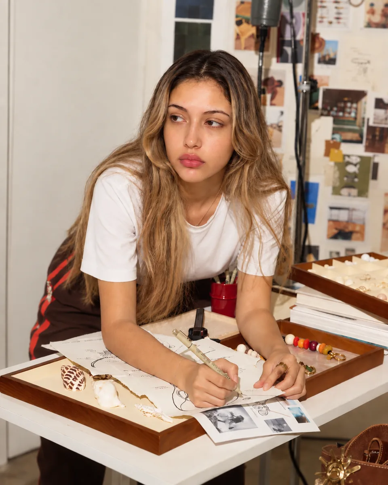

Branding

The name, the position, the mark, and a system that has to survive a feed it was never designed for. Not a deck that gets signed off and filed, but the thing the press cycle, the creator brief and the menu photograph all have to agree with.